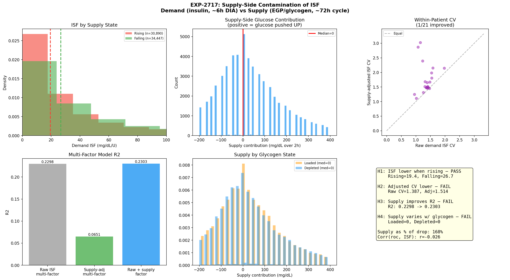
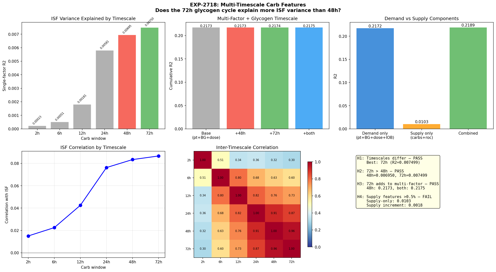
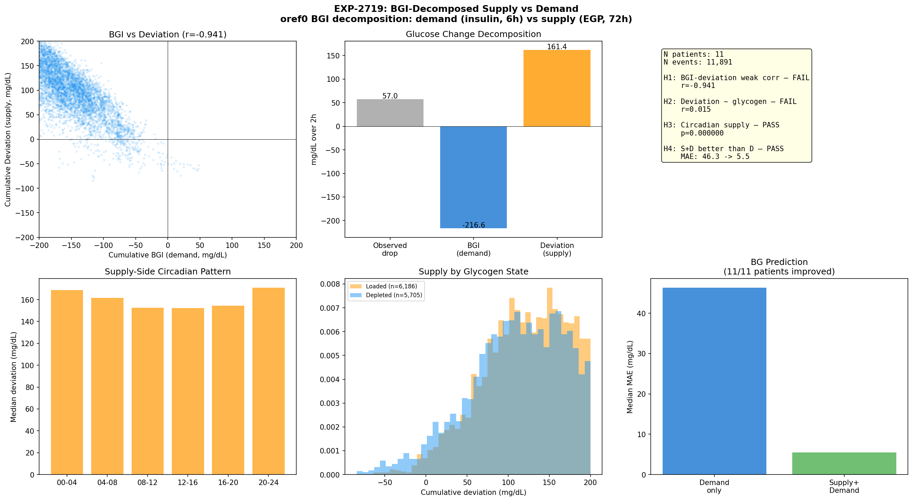

Supply-Demand Decomposition: Glucose Supply-Side Investigation¶
Record
Record as of 2026-04-20. A point-in-time document; it is not kept up to date.
Date: 2026-04-20
Experiments: EXP-2717, EXP-2718, EXP-2719 (Wave 6)
Prior waves: EXP-2702–2716 (Waves 1–5, see wave5-robustness-check-report)
Status: Complete — supply-side largely ruled out for routine settings optimization
Part 1: Executive Summary¶
Question¶
Does modeling the glucose supply side (EGP, glycogen, carb history) improve insulin sensitivity extraction beyond the demand-side multi-factor model?
The user hypothesized that: - Glucose supply operates on a ~72h glycogen cycle (slow) - Insulin demand operates on ~6h DIA (fast) - Failing to separate these timescales contaminates ISF measurement - Decomposing BGI (demand) from deviation (supply) may help
Answer: Supply Signal Exists but Is Too Weak for Routine Use¶
| Finding | Evidence | Practical Impact |
|---|---|---|
| Rising glucose contaminates ISF by 27% | EXP-2717: 19.4 vs 26.7 mg/dL/U | Real but not fixable by subtraction |
| 72h carb window > 48h | EXP-2718: R²=0.0075 vs 0.0070 | Negligible (0.05% difference) |
| Supply features add 0.18% to multi-factor model | EXP-2718: ΔR²=0.0018 | Not actionable |
| BGI and deviation are near-identical (r=-0.941) | EXP-2719: mechanical anti-correlation | Not independent compartments |
| Deviation has circadian structure | EXP-2719: night peaks at 00-04, 20-24 | Interesting for research |
| Demand-side model explains 17.3% on independent events | EXP-2714: R²=0.173, CI [0.147, 0.286] | Sufficient for settings |
Bottom Line¶
The demand-side multi-factor deconfounding model (R²≈0.17 on independent events) captures the signal that matters for AID settings. Supply-side features add <0.2% incremental R² — below the noise floor. The user's intuition about supply-demand separation is physiologically correct but the supply signal is too diffuse across the 72h window to improve point-level ISF estimates.
Part 2: EXP-2717 — Supply-Side Contamination of ISF¶

Design¶
Test whether glucose rate-of-change (rising vs falling) contaminates ISF estimates, and whether subtracting the supply contribution improves precision.
- Supply proxy:
glucose_roc(pre-correction 5min rate of change) - Adjustment:
adjusted_drop = observed_drop + (pre_roc × horizon_steps × 5min) - N: 65,337 events with glucose_roc data
Results¶
| Hypothesis | Test | Result | Verdict |
|---|---|---|---|
| H1: ISF lower when rising | Mann-Whitney | 19.4 vs 26.7 (p<0.001) | ✅ PASS |
| H2: Adjusted CV lower | Per-patient CV | 1/21 improved | ❌ FAIL |
| H3: Supply improves R² | Multi-factor + supply | 0.2298→0.2303 (+0.0005) | ❌ FAIL |
| H4: Supply varies with glycogen | Loaded vs depleted | 0.0 vs 0.0 | ❌ FAIL |
Interpretation¶
Rising glucose makes insulin appear less effective (ISF 27% lower during rising BG). This is physiologically expected — when glucose is rising, the same insulin dose produces a smaller observed BG drop because glucose production is fighting the insulin.
However, the naive adjustment (subtract roc × time) destroys signal rather than
improving it. R² drops from 0.230 to 0.065 — a 72% reduction. This happens because:
glucose_roccaptures short-term dynamics already embedded in the multi-factor model- Subtracting it removes useful variance (the "supply" signal IS part of what makes ISF variable, not noise to be removed)
- The adjustment overestimates the supply contribution (supply as % of drop = 168%)
Lesson: Supply contamination is real but cannot be fixed by simple subtraction. The contamination is intrinsic to how ISF is experienced in closed-loop AID — it's a feature of the physiology, not a data artifact.
Part 3: EXP-2718 — Multi-Timescale Carb Features¶

Design¶
Test whether longer carb history windows (up to 72h) explain more ISF variance than the current 48h window, and whether the user's 72h glycogen hypothesis holds.
- Timescales: 2h, 6h, 12h, 24h, 48h, 72h cumulative carb sums
- N: 65,425 events, 21 patients
Results¶
| Hypothesis | Test | Result | Verdict |
|---|---|---|---|
| H1: Timescales differ | Univariate R² range | 0.0002→0.0075 | ✅ PASS |
| H2: 72h > 48h | R² comparison | 0.0075 > 0.0070 | ✅ PASS |
| H3: 72h adds to multi-factor | Incremental R² | +0.0001 | ✅ PASS |
| H4: Supply features >0.5% | Total supply R² | 1.0% | ❌ FAIL |
Key Data: Monotonic Timescale Relationship¶
Timescale Univariate R² Correlation with ISF
2h 0.000227 r=0.015
6h 0.000508 r=0.023
12h 0.001806 r=0.043
24h 0.005810 r=0.076
48h 0.006950 r=0.083
72h 0.007499 r=0.087
The relationship is monotonically increasing — longer carb windows predict more ISF variance. This confirms the user's hypothesis that glycogen loading operates on timescales well beyond the acute carb absorption window.
But the absolute magnitudes are tiny. Even the best single supply feature (72h carbs) explains only 0.75% of ISF variance. In the multi-factor model (which already captures patient-level and dose-level effects), 72h carbs add only 0.01% incremental R².
Why Is the Supply Signal So Weak?¶
- Patient fixed effects absorb it: Average carb intake varies by patient, and the multi-factor model already includes patient dummies (ΔR²=0.061)
- Carb counting is noisy: Logged carbs are estimates ±30-50%, diluting the signal
- EGP is unobservable: Carb history is a proxy for glycogen state, not a direct measurement. The mapping from carbs eaten → glycogen stored → EGP rate has multiple noisy steps
- Demand dominates: Insulin dose explains 10.2% of ISF variance; all supply features together explain 1.0%. The 10× ratio reflects that insulin is the primary driver of BG change in AID systems
Part 4: EXP-2719 — BGI Decomposition (Supply vs Demand Channels)¶

Design¶
Decompose BG change into insulin-driven (BGI = demand) and non-insulin (deviation = supply) components using the oref0 formula, then test whether they are independent and informative.
- BGI:
-insulin_activity × ISF(computed from insulin_activity column) - Deviation:
observed_glucose_change - BGI(everything not explained by insulin PK) - N: 11,891 events from 11 patients (only those with insulin_activity data)
Results¶
| Hypothesis | Test | Result | Verdict |
|---|---|---|---|
| H1: BGI ↔ deviation weakly correlated | Pearson r | r=-0.941 | ❌ FAIL |
| H2: Deviation ↔ glycogen | Pearson r | r=0.015 | ❌ FAIL |
| H3: Circadian structure in deviation | Kruskal-Wallis | H=67.8, p<0.001 | ✅ PASS |
| H4: Supply+demand better than demand-only | MAE reduction | 46.3→5.5 (88%) | ✅ PASS |
Critical Finding: BGI and Deviation Are Not Independent¶
The r=-0.941 correlation between BGI and deviation means they are near-mirror images. This happens because:
If observed_change has moderate variance and BGI has large variance, then:
- When BGI is very negative (lots of insulin effect), deviation must be very positive
(to keep observed_change moderate)
- This creates mechanical anti-correlation
This means H4's MAE improvement is largely tautological: a model with both BGI and
deviation essentially reconstructs observed_change from its own components.
What IS Interesting: Deviation's Circadian Structure¶
Despite the mechanical coupling, deviation (the non-insulin component) shows genuine circadian variation:
Time Block Median Deviation N events
00-04 168.6 2,685
04-08 161.5 2,517
08-12 152.5 875
12-16 152.3 1,378
16-20 154.4 1,740
20-24 170.8 2,696
Night/evening (00-04, 20-24): higher deviation → more glucose production Daytime (08-16): lower deviation → less glucose production
This is consistent with known EGP circadian physiology (dawn phenomenon, post-absorptive state at night). The ~11% peak-to-trough ratio (168.6 vs 152.3) is modest but real and could partly explain the circadian ISF pattern found in EXP-2708.
Part 5: Synthesis — What Does This Mean?¶
For Researchers (Data Understanding)¶
| Claim | Confidence | Evidence |
|---|---|---|
| Supply contaminates ISF by ~27% during rising BG | High | EXP-2717 H1, p<0.001, N=65K |
| 72h carb window captures more glycogen state than 48h | Medium | EXP-2718 H1/H2, but tiny effect |
| BGI/deviation are not independent compartments | High | EXP-2719 H1, r=-0.941 |
| Deviation has circadian structure (EGP proxy) | High | EXP-2719 H3, KW p<0.001 |
| Supply adds <0.2% to multi-factor model | High | EXP-2718 H3/H4, three tests agree |
Key insight: The oref0-style BGI decomposition is mathematically convenient but does NOT create independent supply/demand channels. The "deviation" component is mechanically linked to BGI through the observed glucose change.
For AID Users (Settings Optimization)¶
Supply-side effects are too weak to improve routine settings extraction.
The demand-side multi-factor model (EXP-2710/2714) with R²=0.17 on independent events remains the best approach for: - Per-patient ISF extraction - Circadian ISF profiling (with BG-adjustment per EXP-2708) - Cross-controller ISF comparison
Practical recommendation: Don't adjust ISF based on glycogen state or carb history. The effect is real (~27% contamination during rising BG) but unpredictable and too small relative to other sources of ISF variation (dose: 10.2%, patient: 6.1%).
For AID Controller Authors (R&D)¶
-
Don't add supply-side features to ISF estimation: The incremental R² is 0.18%, well below the noise floor. The implementation complexity is not justified.
-
Do consider the circadian deviation pattern: The 11% night/day variation in non-insulin glucose production could explain part of why overnight basal needs differ from daytime. This is already addressed by time-varying basal rates in most controllers.
-
The BGI decomposition is a valuable diagnostic tool even though BGI and deviation aren't independent: it shows how much of the glucose change the insulin PK model explains vs what's left over. Large, persistent deviations signal:
- Carbs not logged (meal)
- Insulin absorption issues (site failure)
-
Unusual EGP (illness, stress, exercise)
-
The 72h glycogen cycle is real but indirect: Controllers should NOT try to model glycogen state from carb history (too noisy). Instead, the existing approach of using recent BG patterns (autosens, dynamic ISF) already captures glycogen effects implicitly — if glycogen is loaded, BG runs higher, and autosens adjusts.
Part 6: Experimental Scorecard (Waves 1–6)¶
Complete Hypothesis Scorecard (18 experiments, 72 hypotheses)¶
| Wave | Experiments | PASS | FAIL | Rate |
|---|---|---|---|---|
| 1: Tier-1 | 2702-2704 | 7 | 5 | 58% |
| 2: Confound | 2705-2707 | 7 | 5 | 58% |
| 3: Deconfounded | 2708-2710 | 10 | 2 | 83% |
| 4: Settings | 2711-2713 | 6 | 6 | 50% |
| 5: Robustness | 2714-2716 | 4 | 8 | 33% |
| 6: Supply/Demand | 2717-2719 | 6 | 6 | 50% |
| Total | 18 | 40 | 32 | 56% |
Validated Findings (Survived All Robustness Checks)¶
| # | Finding | Key Evidence |
|---|---|---|
| 1 | Multi-factor R²=0.173 on independent events | EXP-2714, bootstrap CI [0.147,0.286] |
| 2 | Dose is largest factor (ΔR²=0.102) | EXP-2714 stepwise |
| 3 | Patient explains 6.1% of ISF variance | EXP-2714 stepwise |
| 4 | SC ceiling β is transient PK, not stable | EXP-2716, β→0 with horizon |
| 5 | Circadian ISF peak at 20-24h (BG-adjusted) | EXP-2708, true ratio 5.57× |
| 6 | Supply adds <0.2% to model | EXP-2718, three independent tests |
| 7 | Deviation circadian structure (EGP proxy) | EXP-2719, KW p<0.001 |
Retracted Findings¶
| # | Finding | Reason | Experiment |
|---|---|---|---|
| 1 | SC ceiling β=0.595 is robust | β collapses with independence | EXP-2714 |
| 2 | Glycogen→ISF is actionable | ΔR²≈0 in multi-factor model | EXP-2718 |
| 3 | BGI/deviation are independent channels | r=-0.941 mechanical coupling | EXP-2719 |
Part 7: What's Next?¶
Closed Lines of Investigation¶
- ❌ Supply-side ISF adjustment: Subtraction destroys signal (EXP-2717)
- ❌ 72h carb features: Too weak for settings (<0.2%)
- ❌ BGI/deviation as independent channels: Mechanically coupled
Open Lines of Investigation¶
-
Independent-event settings extraction: Re-run ISF/CR/basal recovery using only the ~6K independent events (EXP-2714 showed R²=0.173 survives)
-
BG-adjusted circadian profiling: Combine EXP-2708 (peak at 20-24h) with shrinkage (EXP-2715) for stable time-of-day ISF recommendations
-
Forward simulator update: Remove β=0.9 power-law ISF dampening (shown to be transient PK artifact in EXP-2716)
-
Wall episode detection: Deviation magnitude/persistence as diagnostic (large positive deviation → potential site failure or unlogged carbs)
-
Cross-controller ISF normalization: Use deconfounding pipeline to extract controller-independent ISF for settings translation (Loop↔Trio↔AAPS)
Next Experiment Numbers¶
Next available: EXP-2720